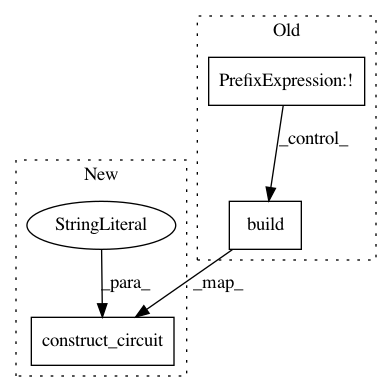

55d2576c203ace380e09bf045a327841415ce36f,qiskit/aqua/components/uncertainty_models/univariate_variational_distribution.py,UnivariateVariationalDistribution,set_probabilities,#UnivariateVariationalDistribution#Any#,86
Before Change
q_ = QuantumRegister(self._num_qubits)
c_ = ClassicalRegister(self._num_qubits)
qc_ = QuantumCircuit(q_, c_)
if not self._initial_distribution is None:
self._initial_distribution.build(qc_, q_)
qc_.extend(self._var_form.construct_circuit(self.params, q_))
quantum_instance = QuantumInstance(backend=backend, circuit_caching=False)
if quantum_instance.is_statevector:
After Change
q_ = QuantumRegister(self._num_qubits, name="q")
if self._initial_distribution:
qc_= self._initial_distribution.construct_circuit(mode="circuit", register=q_)
else:
qc_ = QuantumCircuit(q_)
circuit_var_form = self._var_form.construct_circuit(self.params, q_)
qc_ += circuit_var_form
In pattern: SUPERPATTERN
Frequency: 4
Non-data size: 3
Instances
Project Name: Qiskit/qiskit-aqua
Commit Name: 55d2576c203ace380e09bf045a327841415ce36f
Time: 2019-05-01
Author: ouf@zurich.ibm.com
File Name: qiskit/aqua/components/uncertainty_models/univariate_variational_distribution.py
Class Name: UnivariateVariationalDistribution
Method Name: set_probabilities
Project Name: Qiskit/qiskit-aqua
Commit Name: 55d2576c203ace380e09bf045a327841415ce36f
Time: 2019-05-01
Author: ouf@zurich.ibm.com
File Name: qiskit/aqua/components/uncertainty_models/multivariate_variational_distribution.py
Class Name: MultivariateVariationalDistribution
Method Name: set_probabilities
Project Name: Qiskit/qiskit-aqua
Commit Name: 26949ac70fc9cff80e633b0476c306d7809c8263
Time: 2019-04-30
Author: ouf@zurich.ibm.com
File Name: qiskit/aqua/components/uncertainty_models/multivariate_variational_distribution.py
Class Name: MultivariateVariationalDistribution
Method Name: build
Project Name: Qiskit/qiskit-aqua
Commit Name: 26949ac70fc9cff80e633b0476c306d7809c8263
Time: 2019-04-30
Author: ouf@zurich.ibm.com
File Name: qiskit/aqua/components/uncertainty_models/univariate_variational_distribution.py
Class Name: UnivariateVariationalDistribution
Method Name: build